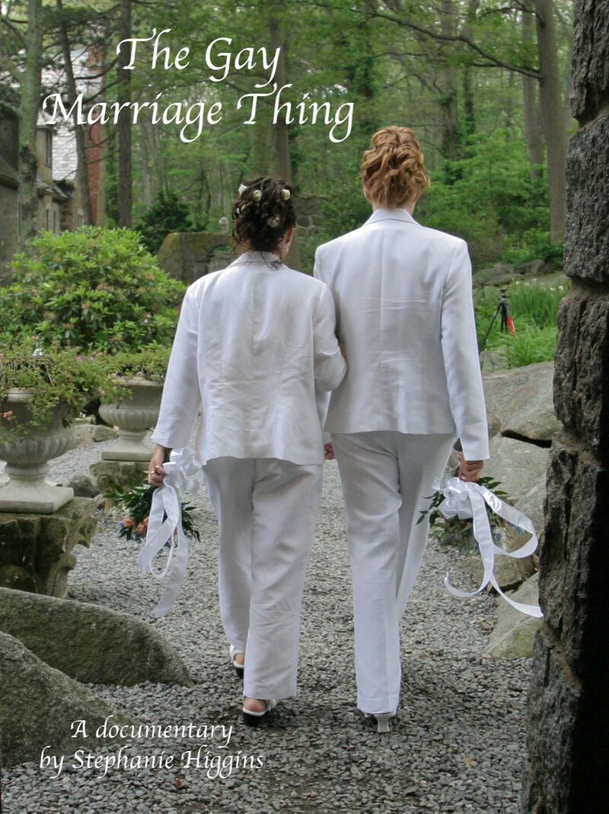

Steff Higgins
Writer and Filmmaker
Steff Higgins writes books featuring trans and non-binary characters. They studied film at Emerson College and directed The Gay Marriage Thing documentary. Steff has a first degree black belt in Kenpo karate, is a bit of a workout nerd, and can wiggle their ears.

Available Now
The Gay Marriage Thing
The Gay Marriage Thing is a compelling documentary about the politics, the piety and the people embroiled in and affected by the same-sex marriage debate. By focusing on regular Americans on both sides of the issue, this documentary captures what gets lost in most news reports, the human emotions behind the headlines.
Now Streaming